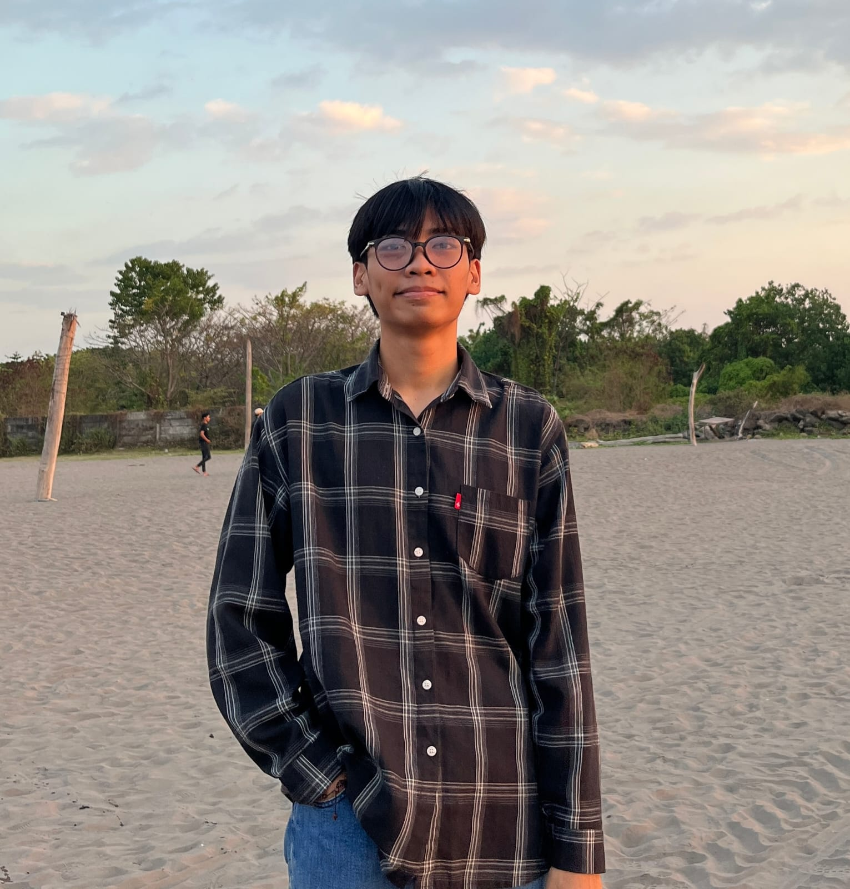
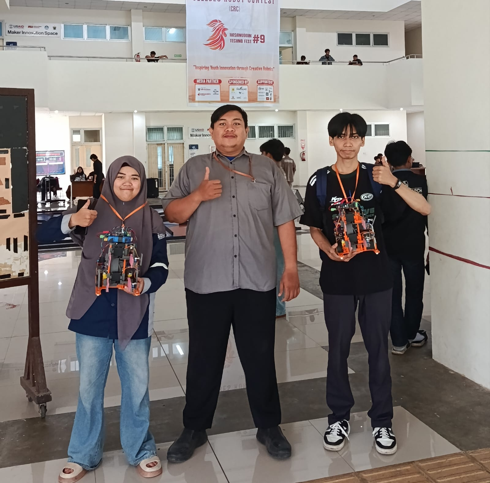
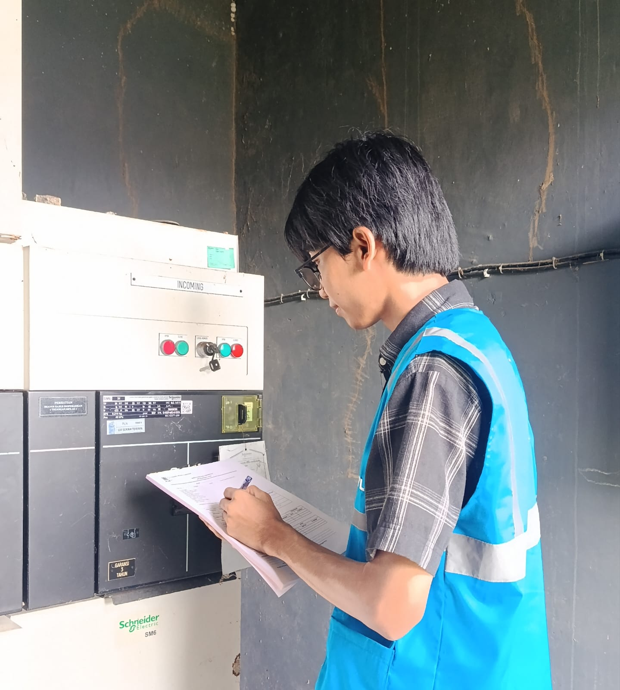
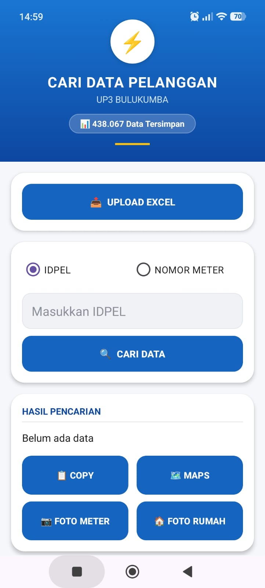

Software Developer & Ketua Robotik JTIK
Mahasiswa Pendidikan Teknik Informatika dan Komputer, Universitas Negeri Makassar. Membangun aplikasi Java & Android yang benar-benar dipakai, sambil memimpin unit robotik dan turun langsung ke lapangan kompetisi.

Tentang
Saya Risky Ramadhan Ahmad, mahasiswa jurusan Pendidikan Teknik Informatika dan Komputer di Universitas Negeri Makassar. Saya telah menyelesaikan Praktek Industri, kegiatan wajib yang diharuskan kampus, dengan fokus membangun aplikasi Java dan Android untuk kebutuhan operasional lapangan di PLN.
Di luar coding, saya memimpin sebagai Ketua Robotik JTIK dan pernah membawa tim berkompetisi di tingkat antar kampus. Saya juga terbiasa menuntaskan proyek secara mandiri dari nol — termasuk menyelesaikan sendiri proyek tugas akhir kuliah yang aslinya dirancang untuk dikerjakan tim berisi 7 orang.
Organisasi & Prestasi
Memimpin unit kegiatan robotik Jurusan Teknik Informatika dan Komputer — mengoordinasikan tim, merancang proyek robotik, dan membina anggota baru.
Membawa tim robotik JTIK berkompetisi di ajang antar kampus, mengasah kemampuan kerja tim di bawah tekanan waktu kompetisi.
Dokumentasi

Bersama tim membawa robot rakitan sendiri berkompetisi di Celebes Robot Contest, sebagai bagian dari Hasanuddin Techno Fest.

Turun langsung ke lapangan memeriksa panel switchgear saat menjalani Praktek Industri di unit PLN.
Aplikasi Terpakai

Aplikasi Android untuk mencari data pelanggan meter PLN dari file Excel berisi ratusan ribu baris data. Hasil pencarian ditampilkan seperti pesan broadcast WhatsApp agar mudah dibaca petugas lapangan. Digunakan aktif setiap hari oleh petugas di PLN UP3 Bulukumba.
Kontak
Terbuka untuk diskusi proyek, kolaborasi, atau kesempatan magang dan kerja. Silakan hubungi lewat salah satu channel di bawah ini.